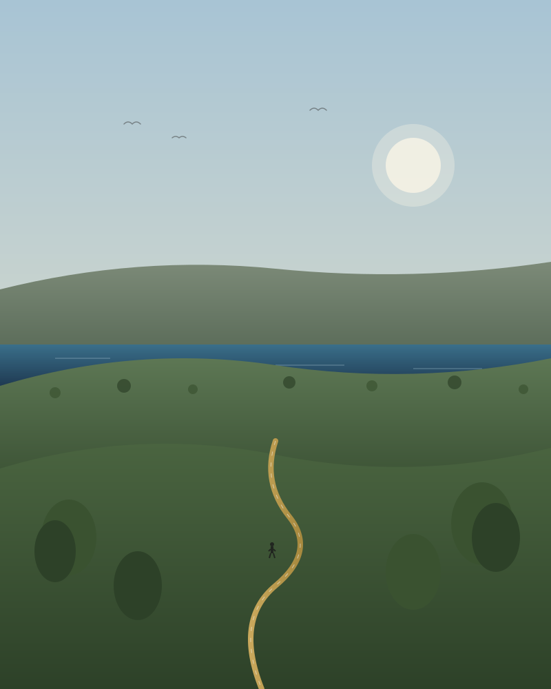

四十多個學會、八項體育活動、四個表演團隊，以及整個西貢郊野公園作為我們的第二校園。
聯課活動不是附加項,而是很多學生發現興趣、能力與投入所在的地方。
欖球、籃球、游泳、田徑、越野跑與羽毛球,活躍於全港校際聯賽。
弦樂團、管樂團、合唱團與戲劇,每年舉辦春季音樂會與雙語舞台劇。
機械人、程式設計、科學研究學會,以及課後開放的創客空間。
少年警訊、社區外展、團契小組與年度亞洲服務之旅。

睿智谷校園直通西貢郊野公園，我們充分利用這片天地。每個級別都有系統化的戶外學習歷程，從中一的海岸生態，到高年級的麥理浩徑領袖遠足。
這是我們最引以為傲的學校生活部分。學生學習看地圖、分工搭帳、在雨中堅持下去，也學習留心一個比自己更古老、更廣闊的地方。
查看課程